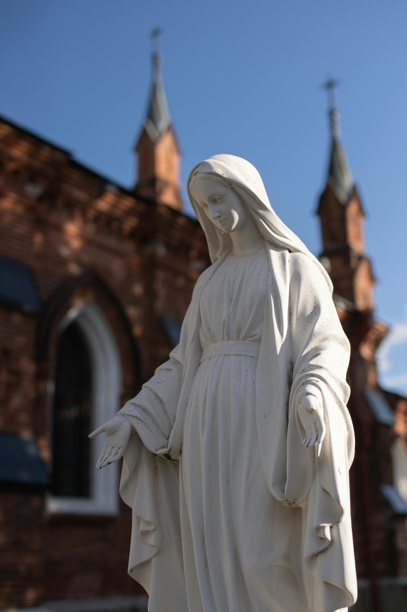
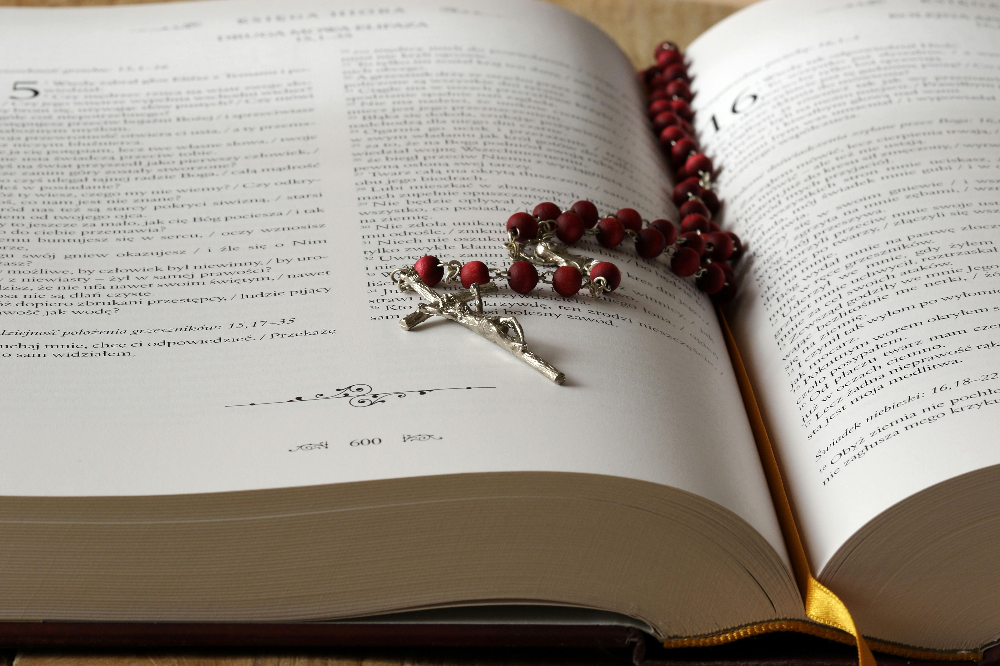

Welcome to my little website about Mary, Mother of Jesus! Whether you are Catholic or not, Christian or not, there is something each of us can learn and love about Mary, and here is where you will find a little introduction to Her. And if you are Catholic, perhaps you have been considering starting a Marian devotion, or maybe you have heard people talking about consecrations and medals and scapulars and would like to know what exactly they are. Fear not, for you can learn about them (and other cool facts) here!
Curious about where the famous "Ave Maria" ("Hail Mary") prayer came from? Or perhaps want a prayer asking Mary's intercession for students? You'll find a small variety of select and popular Marian prayers on the Prayers page.
Prayers

Explore different practices and devotions including Rosaries, Marian consecration, the Miraculous Medal, Brown Scapular, and some others. Check them out on the Practices page!
PracticesCurious to learn even more about Mary? This site is way too little to contain everything there is to learn about Her. Check out some cool resources (some written by saints)!
Resources
Why is Mary so popular, especially among Catholics? Do Catholics worship Mary? Why foster a devotion to Her when we already have Jesus? Check out the About page to learn more!
About